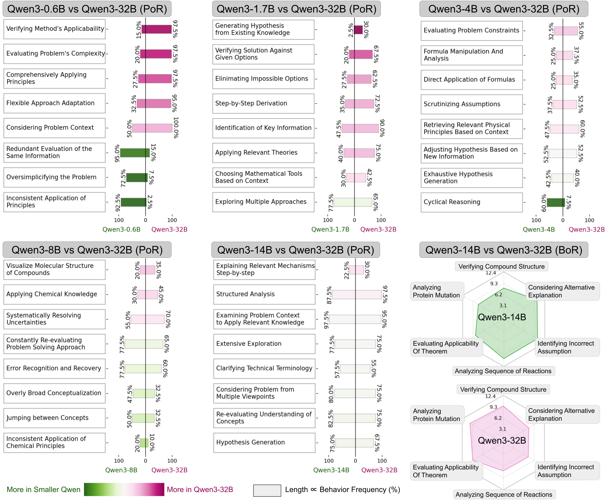
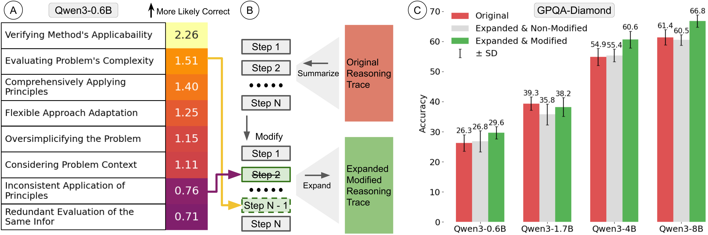

12 LRMs x 5 datasets
24,444 reasoning traces spanning GPQA-Diamond, MATH-500, AIME 24/25, CRUXEVAL, and LiveCodeBench (execution).
Characterizing the distinguishing reasoning patterns of large reasoning models by building an open, LLM-proposed taxonomy of how they think.
Harvard University · Meta Superintelligence Labs
LOT (LLM-proposed Open Taxonomy) inductively discovers the reasoning traits that distinguish LRMs, annotates new traces with these traits, and trains a lightweight classifier to quantify how models think.
LOT is inspired by inductive coding in qualitative research: the taxonomy grows with the data instead of being fixed upfront.

Animated overview of LOT's inductive feature discovery and annotation loop.
24,444 reasoning traces spanning GPQA-Diamond, MATH-500, AIME 24/25, CRUXEVAL, and LiveCodeBench (execution).
LOT separates reasoning from models that differ in scale, base family, or specialization, outperforming few-shot prompting, VML, and fixed taxonomies by up to 23.8%.
Reasoning differences such as circular self-checks, visualization habits, or coding-based math strategies are named and defined in natural language.
Editing smaller Qwen3 models' reasoning to emphasize useful LOT features improves answer accuracy without touching weights.
Three axes—model scale, base family, and domain specialization—lead to distinct reasoning signatures.

Comparing five smaller Qwen3 variants with Qwen3-32B yields 80–93% accuracy on GPQA. Larger models consistently verify their chosen theory, keep track of constraints, and avoid circular evidence loops.

When models share the same pretraining family (e.g., Qwen descendants), they become harder to distinguish; cross-family pairs (Phi, Mistral, Nemotron) display sharper contrasts.

Seed-Coder-8B-Reasoning, tuned on coding data, occasionally solves MATH-500 problems by writing and executing Python functions. Qwen3-8B only uses code when forced to interpret diagrams.

The qualitative taxonomy in Appendix B surfaced recurring habits that are easy to miss when only reading final answers.
Seed-Coder-8B · MATH-500
When faced with contest-math questions, Seed-Coder often writes pseudocode and executes it mentally or via Python snippets, whereas Qwen3-8B leans on human-style derivations.

LOT's features are not just descriptive—they serve as levers for editing thoughts.
We compute odds ratios that link each reasoning feature to correctness on GPQA. Instead of asking models to obey explicit thought-level commands (which they fail to do), we summarize their original trace, edit the summary according to LOT insights, and re-expand it into a new reasoning script.

Appendix C tests whether LRMs can add a simple sentence (“I am a large language model.”) at the start of their thinking. Almost all models fail.

The taxonomy discovered by LOT is robust across random seeds and grounded in a large-scale reasoning corpus.

@article{chen2025your,
title={Your thoughts tell who you are: Characterize the reasoning patterns of LRMs},
author={Chen, Yida and Mao, Yuning and Yang, Xianjun and Ge, Suyu and Bi, Shengjie and Liu, Lijuan and Hosseini, Saghar and Tan, Liang and Nie, Yixin and Nie, Shaoliang},
journal={arXiv preprint arXiv:2509.24147},
year={2025}
}